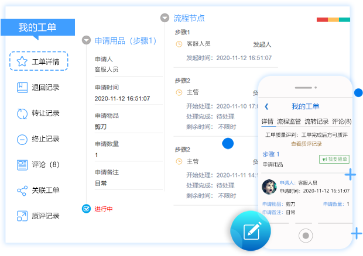
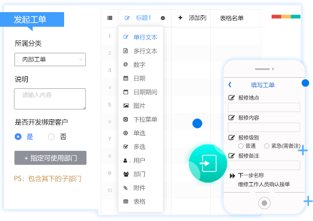
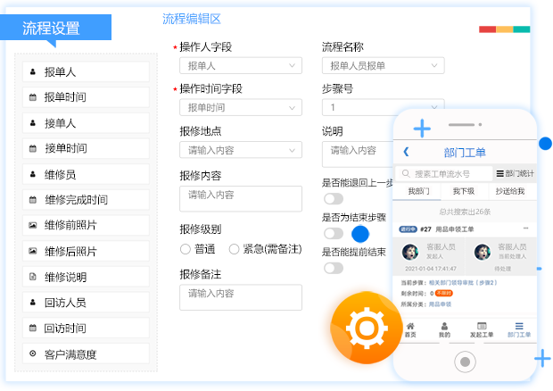
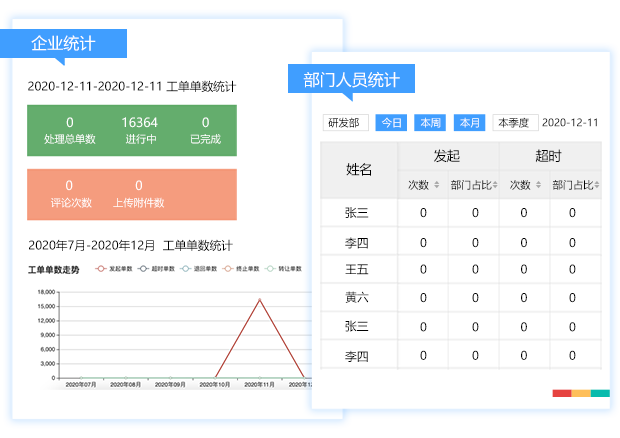

在线工单
及时收集流转
通过表单，我们的数据收集效率至少提升80%，
摆脱无纸化办公，数据及时收集和流转，这是
信息化大数据时代的第一步。
简单操作
自定义强大的业务工单
有源工单提供丰富常用字段类型，通过简单的拖拽，会打字
就可以创建工单表格。我们还提供定制工单服务，根据您的
企业独立定制。


轻松设置工单流程
打造适合自己的业务系统
A发起工单，B自动接收流程信息，处理填报后提交给C接收
流程信息，继续处理，让业务处理有条不紊。
各式图文统计报表
助力工作监管
有源工单提供丰富常用字段类型，通过简单的拖拽，会打字
就可以创建工单表格。我们还提供定制工单服务，根据您的
企业独立定制。

轻松设置工单流程
打造适合自己的业务系统
A发起工单，B自动接收流程信息，处理填报后提交给C接收
流程信息，继续处理，让业务处理有条不紊。